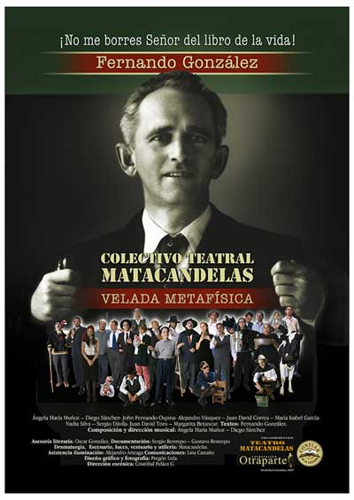
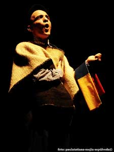

Fernando González - Velada Metafísica obtiene el premio Nacional
de Dirección a Montaje Teatral

Matacandelas ganó y su temperatura subió
por Alexandra Serna, Redactora/LA PATRIA
El director Cristóbal Peláez, ganador del Tercer Premio Nacional de Dirección a Montaje Teatral, dijo que desde la primera versión no aumentan el aporte económico. El concurso evalúa la producción colombiana. Balance.
Si el Premio Nacional de Dirección a Montaje Teatral es un "termómetro del teatro colombiano", como lo describió una de sus responsables, la reñida competencia que hubo en su tercera versión indica que la temperatura en escena está alta.
El ganador fue Cristóbal Peláez, director de la obra 'Velada Metafísica', del Teatro Matacandelas de Medellín. Por su parte, los directores Heidi y Rolf Abderhalden, del montaje 'Ansío los Alpes; así nacen los lagos', del Teatro Mapa de Bogotá, recibieron la Mención de Honor.
La premiación fue el sábado pasado, en la noche, en Los Fundadores. Pero ninguno de los directores estuvo presente.
"Si hubiera dos premios, se los daba a ambos", afirmó la mexicana Alicia Laguna, miembro del jurado.
"Son montajes muy poderosos, en lenguajes muy diferentes. Mientras el de Mapa Teatro nos impresionó por su poderío visual y síntesis, y por romper con el teatro tradicional, el de Matacandelas nos resultó muy redondo y contundente en todos los aspectos evaluados, especialmente en el trabajo actoral", dijo.
Un concurso para calibrar, pero...
Este Premio surgió en el 2004 y lo otorga el Ministerio de Cultura, que entrega 40 millones de pesos al ganador. Antes el comité organizador viajaba adonde se radicaban los grupos nominados para dar luego el veredicto.
Este año, en cambio, el Festival Internacional de Teatro de Manizales fue por primera vez el escenario del concurso. De hecho, la cuota nacional del certamen estuvo compuesta por las 11 obras preseleccionadas.
"La alianza entre el Festival y MinCultura nos garantizó ver los mejores montajes que hay ahora en Colombia. Fue una vitrina para los directores nacionales ante los internacionales", dijo Matilde Cuartas, Directora Ejecutiva del Festival. Además, existe la posibilidad de que la alianza continúe. "Es importante dar el Premio en este tipo de certámenes porque les permite a los grupos encontrarse y evaluar su grado de investigación e innovación", señaló Clarisa Ruiz, Directora de Artes del Ministerio, que estuvo en la ciudad entregando el galardón.
Sin embargo, ni el propio ganador está muy convencido de que este sea un mecanismo suficiente. Cristóbal Peláez, Director de 'Velada Metafísica', considera que "es muy duro someterse a un concurso de estos. Desde que se creó, el Ministerio mantiene el estímulo en 40 millones de pesos y debería ser mayor".
A pesar del reclamo que hizo, Peláez admitió que el dinero recibido les servirá para cubrir parte de los gastos de la remodelación de su sede, en Medellín, que les costó 250 millones.
Para el próximo Festival
La entrega de este premio precedió la última función de sala, el sábado pasado. Mientras que el teatro de calle terminó ayer con la presentación de grupos europeos, colombianos, del Perú y Ecuador. Concluyó así la versión XXXI del Festival.
La participación del público y los manizaleños en general fue uno de los aspectos más destacados: "lo que sentí aquí pocas veces lo vivo en otros festivales. La fiesta fue para los ciudadanos, desde el taxista hasta la mesera sabían que estábamos en Festival", expresó la mexicana Laguna.
Para la Directora Ejecutiva, aún falta sentido de pertenencia. "El año entrante los centros comerciales, hoteles y restaurantes se deberían vestir de teatro. Si un visitante llega al terminal o al aeropuerto, sienta que estamos de fiesta", concluyó.
El público fue el otro premio: ganador
Cristóbal Peláez, Premio Nacional de Dirección a Montaje Teatral 2009, piensa que el reconocimiento no es para una sola persona, sino para el grupo entero.
El Teatro Matacandelas, de Medellín, tardó dos años en montar la obra 'Velada Metafísica', que les exigió bastante trabajo por la complejidad del personaje protagónico, el filósofo Fernando González.
"Temíamos que la gente no fuera a vernos, porque esta obra la hemos presentado cuatro veces en Manizales, en el Festival Internacional y en La Traviesa, que organiza Actores en Escena. Pero la afluencia del público fue muy buena", admitió Peláez.
fuente: http://www.lapatria.com
Video Fernando Gonzalez Velada metafisica (fragmento)
Un antioqueño, mejor director de montaje teatral del país
Por Ministerio de Cultura

Cristóbal Peláez, director del colectivo ‘Matacandelas’, de Medellín, fue seleccionado como el mejor director de montaje teatral en Colombia. Este premio es entregado por el Ministerio de Cultura, a través del Portafolio de Convocatorias 2009, del Programa de Becas y Estímulos.
Manizales, septiembre de 2009. Coincidiendo con el cierre de la gran fiesta teatral que se vivió en Manizales durante el XXXI Festival Internacional de Teatro, el Ministerio de Cultura hizo entrega del Premio Nacional a Mejor Dirección de Montaje al director antioqueño Cristóbal Antonio Peláez, por la obra ‘Fernando González, velada metafísica’. El certamen de premiación se realizó en el Centro Cultural y Convenciones Los Fundadores, de la capital caldense.
Peláez, quien recibirá $40 millones como premio, nació en Envigado (Antioquia). A los 18 años incursionó en el mundo del teatro, que lo llevó, posteriormente y después de una larga experiencia profesional, a fundar el colectivo teatral ‘Matacandelas’, en 1979, grupo con el que ha realizado 40 montajes y cerca de 5 mil presentaciones en Colombia, Venezuela, Guatemala, Francia, Portugal, España, Bélgica, Ecuador y Cuba, donde se ha desempeñado como actor, escenógrafo, dramaturgo y director.
Entre los diversos montajes del colectivo ‘Matacandelas’, que este año cumple 30 años, encontramos las siguientes obras: ‘La caída de la casa Usher - velada gótica I de Edgar Allan Poe’; ‘Fernando González - velada metafísica’; ‘El hada y el cartero’; ‘Juegos nocturnos 2’; ‘Medea de Lucio Anneo Séneca’; ‘Los ciegos de Maurice Maeterlinck’ y ‘Pinocho’, entre otros.
El jurado calificador, conformado por los expertos internacionales Gustavo Ariel Uano (Argentina), Alicia Laguna (México) y Jaime Gómez (Cuba), aseguraron que la dirección de la obra ganadora “revela la solidez del trabajo de un grupo que apuesta por la artesanía y el compromiso de todos en la labor de creación, lo cual redunda en un muy alto nivel artístico y en un diálogo amplio y directo con los espectadores”.
Tras una prolongada y ardua deliberación, el jurado decidió otorgar una mención de honor a Heidi Abderhalden Cortes, del grupo ‘Mapa Teatro’ de Bogotá, por la obra ‘Ansío los Alpes; así nacen los lagos’.
Heidi, Elizabeth y Rolf Abderhalden fundaron Mapa Teatro en 1984, al término de un extenso período de formación pedagógica y artística. Desde su creación, este grupo ha construido un universo dentro del ámbito de las artes vivas.
Para el Ministerio de Cultura es un objetivo primordial dar realce a la actividad teatral nacional mediante el reconocimiento de sus diversas prácticas, formas de transmisión, promoción y circulación. Estas positivas acciones forman parte del Plan Nacional para las Artes 2006-2010.
En ese sentido, la Dirección de Artes del Ministerio implementa anualmente el ‘Programa Itinerancias Artísticas por Colombia’, que busca promover el diálogo intercultural y la generación de nuevos públicos en zonas del país donde la oferta artística es escasa.
El proyecto de ‘Itinerancias Artísticas por Colombia’ se viene desarrollando desde 2006, y sus estadísticas son notables: se han realizado 13 circuitos nacionales, han asistido 29.731 espectadores, se han puesto en circulación 48 producciones artísticas, 42 municipios han sido atendidos en un total de 20 departamentos, y se han realizado 108 funciones y 78 actividades pedagógicas.
En 2009, por medio del Programa Nacional de Concertación – Salas Concertadas, se asignaron $1.330 millones, para apoyar la infraestructura de las artes escénicas de 93 salas de teatro en todo el país. Este mismo Programa asignó este año $240 millones a la versión XXXI del Festival Internacional de Teatro de Manizales.
Fuente: http://www.mincultura.gov.co